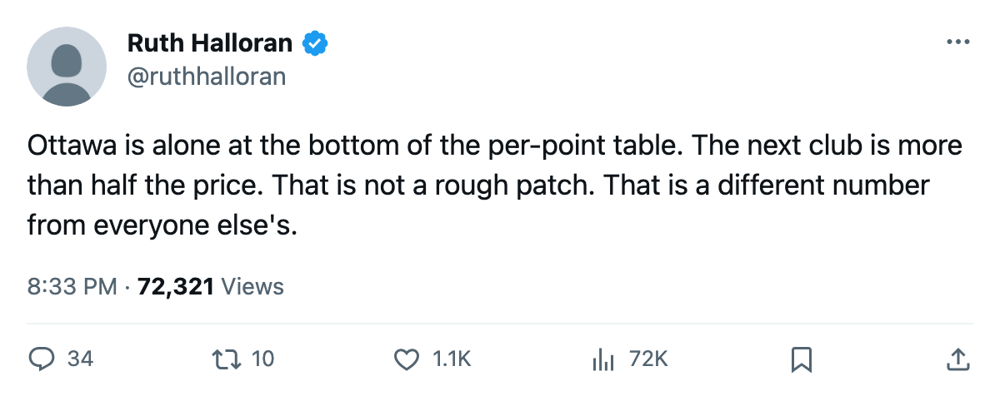
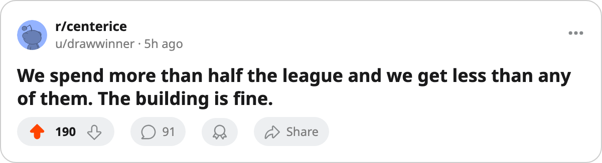

The Worst Per-Point in the League: $11.85M Buys Ottawa the Least Hockey in 30 Clubs
Ottawa's cost per point is more than double the second-worst club, and nearly four times the best
 Ruth HalloranBusiness of hockey · The Building
Ruth HalloranBusiness of hockey · The Building
Ottawa pays $11.85M for every point on the board.  Phoenix Coyotes sits second-last at $6.93M.
Phoenix Coyotes sits second-last at $6.93M.  Pittsburgh Penguins pays $2.72M for the same unit of output. No club in this league is closer to Ottawa on the per-point table than Phoenix is, and Phoenix is less than half as expensive per point.
Pittsburgh Penguins pays $2.72M for the same unit of output. No club in this league is closer to Ottawa on the per-point table than Phoenix is, and Phoenix is less than half as expensive per point.
Michael Hui's payroll stands at $59.27M, the 12th-highest in this league of 30.  Ottawa Senators has 9 games and 5 points. The spread between the best and worst value runs from $2.72M at Pittsburgh to $11.85M at Ottawa.
Ottawa Senators has 9 games and 5 points. The spread between the best and worst value runs from $2.72M at Pittsburgh to $11.85M at Ottawa.
The building is not the reason
Ottawa Senators runs equipment at level 1, workout at 2, practice at 1, and travel at 2. That gives a live sum of minus 13, the joint-13th-worst in the league.  Los Angeles Kings carries minus 19, Phoenix Coyotes carries minus 16. Neither club sits next to Ottawa on the efficiency table. The four tracks that move attributes on the ice are all switched off in this build, so they cannot explain what Hui is paying for.
Los Angeles Kings carries minus 19, Phoenix Coyotes carries minus 16. Neither club sits next to Ottawa on the efficiency table. The four tracks that move attributes on the ice are all switched off in this build, so they cannot explain what Hui is paying for.
Morale tells the same story in reverse. The club average is 89.6, ranked 23rd. The three bottom clubs are  Buffalo Sabres at 87.0,
Buffalo Sabres at 87.0,  Carolina Hurricanes at 87.2, and
Carolina Hurricanes at 87.2, and  Atlanta Thrashers at 87.8. BUF pays $57.39M for $5.74M per point. ATL pays $40.34M for $5.76M per point. Those clubs are sadder rooms than Ottawa and still get nearly twice the value per dollar of payroll.
Atlanta Thrashers at 87.8. BUF pays $57.39M for $5.74M per point. ATL pays $40.34M for $5.76M per point. Those clubs are sadder rooms than Ottawa and still get nearly twice the value per dollar of payroll.
Both ends of the table
| club | payroll | points | per point | morale | live sum | PPG |
|---|---|---|---|---|---|---|
| PIT | $48.92M | 18 | $2.72M | 95.7 | -12 | 1.67 |
| VAN | $46.36M | 17 | $2.73M | 99.1 | -14 | 1.21 |
| NSH | $51.38M | 17 | $3.02M | 94.3 | -10 | 1.38 |
| DAL | $58.02M | 18 | $3.22M | 95.3 | -12 | 1.47 |
| CBJ | $62.03M | 19 | $3.26M | 91.4 | -15 | 1.62 |
| WSH | $56.89M | 9 | $6.32M | 94.8 | -12 | 0.93 |
| MTL | $54.89M | 11 | $6.10M | 88.0 | -14 | 0.85 |
| NYI | $61.02M | 11 | $5.55M | 88.8 | -12 | 1.00 |
| PHX | $55.41M | 8 | $6.93M | 89.6 | -16 | 0.57 |
| OTT | $59.27M | 5 | $11.85M | 89.6 | -13 | 0.70 |
Hui holds 797 prestige points, ranked 10th on the league's standing, level since the previous edition. His record in the chair is 2-6-1. Experience reads 6471772, roughly the league median. He is mid-table on the desk's own ranking and mid-table on spending. The output sits nowhere near either position.
What nine games do and do not say
A per-point figure at 9 games is not a verdict. Three of those losses went to overtime or shootout, which means the point total was two or three higher on any other night. The number does say something structural: $11.85M per point is a ratio, and a ratio built from a small numerator moves slowly. PHX, WSH, MTL, and NYI all sit above $5M a point and hold four of the bottom six spots in points per game. The clubs at the other end, PIT at $2.72M, VAN at $2.73M, NSH at $3.02M, occupy three of the top eleven on PPG.
The payroll-to-output spread across this league runs from $2.72M to $11.85M. Two clubs start the season with the same sheet of paper and the same 29 opponents, and one gets less than a quarter of the points per dollar the other gets. The next-worst club on this table pays $6.93M per point. Ottawa is nearly double that, and there is nothing between them.

